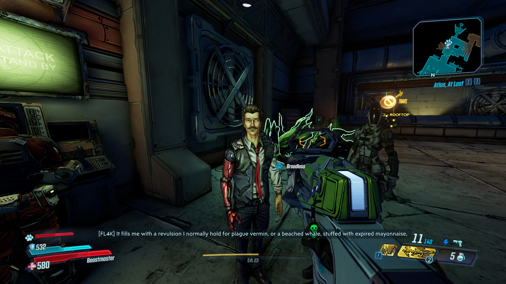
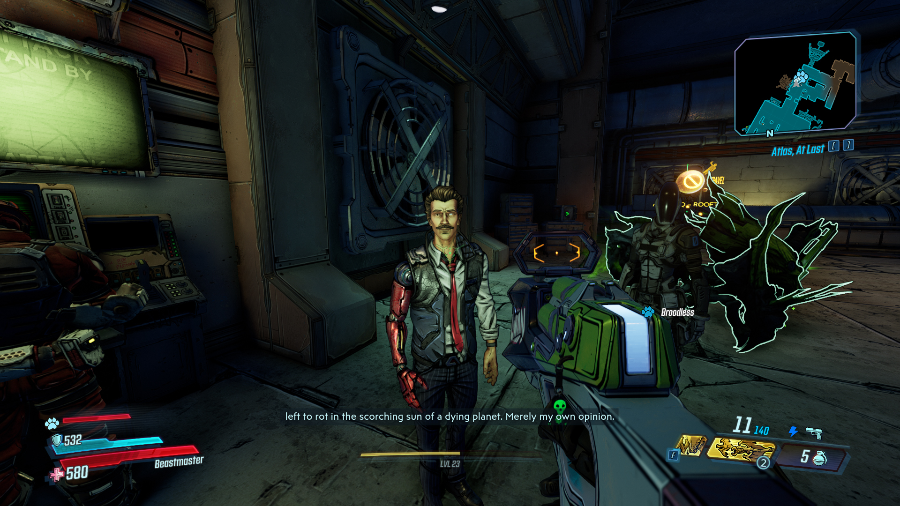

Borderlands 3 is a looter shooter FPS game.
BL3 is the fourth main and fifth overall game of Gearbox Software's Borderlands game series.
The game was released on September 13th, 2019.
This masterpiece comes with a good story, amazing
soundtrack
and with gameplay that makes you never stand up and leave the game!
The dialogues are filled with inappropriate jokes.
If you're humor is stuck at a child's level you are in for a treat!


The series has received critical acclaim and commercial success for its loot-driven multiplayer co-op gameplay and its sense of humor.
As of August 2019, more than 45 million copies of Borderlands games had been shipped, with 22 million from Borderlands 2.
An additional 5 million copies of Borderlands 3 were sold within five days of release, bringing the total series' net revenues to over US$1 billion.
This makes it one of the best-selling video game franchises of all time.
A film adaptation of the series is in development by Lionsgate.
A reason for its success could be the cartoon-like look. Although the game looks like a comic book the scenery is so pretty. Check out the pcitures in the media tab!
I like this game because the jokes they make are so corny and childish.
I love the gameplay. It may not be challenging and it gets repetitive after a long time of farming for the best gun, but it is still brilliant in my eyes.
The prequel (pre-prequel) of this game is Borderlands 2. That game is like BL3 but without the quality of life changes (mantling) and with worse graphics.
If killin' psychos is your thing you should buy the game.
It is quiet frequently on sale so you don't even have to pay the full price for a game that gives you hundreds of hours of fun!